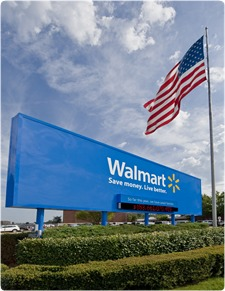

About WallMart ™
Walmart serves customers and members more than 200 million times per week at more than 9700 retail units under 60 different banners in 28 countries. With fiscal year 2010 sales of $405 billion, Walmart employs 2.1 million associates worldwide.
A leader in sustainability, corporate philanthropy and employment opportunity, Walmart ranked in the top ten among retailers in Fortune Magazine’s 2010 Most Admired Companies survey.
Our History
Walmart was founded in 1962, with the opening of the first Walmart discount store in Rogers, Ark. The company incorporated as Wal-Mart Stores, Inc., on Oct. 31, 1969. The company's shares began trading on OTC markets in 1970 and were listed on the New York Stock Exchange two years later.
The company grew to 276 stores in 11 states by the end of the decade. In 1983, the company opened its first Sam’s Club membership warehouse and in 1988 opened the first supercenter -- now the company’s dominant format -- featuring a complete grocery in addition to general merchandise. Walmart became an international company in 1991 when it opened its first Sam's Club near Mexico City.
Our Purpose
Saving people money to help them live better was the goal that Sam Walton envisioned when he opened the doors to the first Walmart more than 40 years ago. Today, this mission is more important than ever to our customers and members around the world. We work hard every day in all our markets to deliver on this promise. We operate with the same level of integrity and respect that Mr. Sam put in place. It is because of these values and culture that Walmart continues to make a difference in the lives of our customers, members and associates.
Ed. Note: Wal-Mart Stores, Inc. (NYSE: WMT) is the legal name of the corporation. The name "Walmart," expressed as one word and without punctuation, is a trademark of the company and is used analogously to describe the company and its stores. Use the legal name when it is necessary to identify the legal entity, such as when reporting financial results, SEC filings, litigation or governance matters.